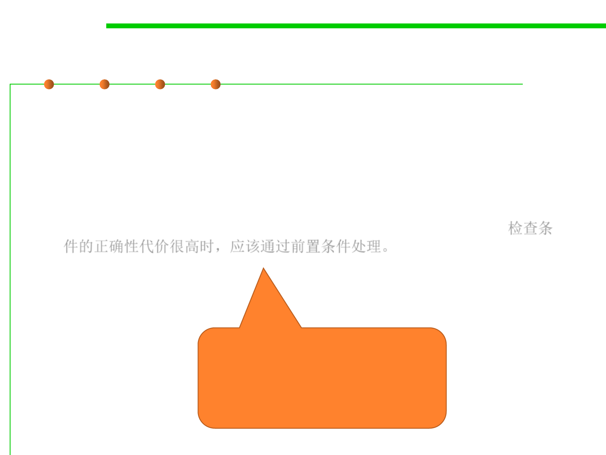

Precondition or postcondition?
3.2 Designing Specification
▪ Whether to use a precondition, and if so, whether the method code
should attempt to make sure the precondition has been met before
proceeding?
▪ For programmer:
– The most common use of preconditions is to demand a property precisely
because it would be hard or expensive for the method to check it. 检查条
件的正确性代价很高时，应该通过前置条件处理。
If to check a condition would
make a method unacceptably
slow, a precondition is often
necessary.